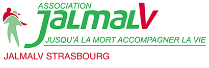

L'Association des Maires du Haut-Rhin
Le contexte
Les membres de l'Association JALMALV, association loi 1901, accompagnent les personnes en fin de vie ou en deuil. L'association existe depuis 1993 à Strasbourg et opère au niveau local. Elle est membre d'une fédération nationale qui compte 80 membres, tous reconnus d'intérêt général. Le projet associatif, revisité l'année précédente, avait clarifié les objectifs, le discours et a donné lieu à de nouveaux supports de communication (livret de présentation, plaquette et lettre d'information), portés par la commission Communication de l'association. Le site Internet, géré par un prestataire externe, posait à la fois un enjeu majeur et une problématique en raison des difficultés de communication avec le prestataire.
Objectif(s) principal(aux)
J'ai d'abord été sollicité pour apporter un regard externe sur le site et conseiller la commission Communication concernant les questions de droit d'auteur et de propriété intellectuelle soulevées par le prestataire du site Internet. Nous avons finalement coordonné la reconstruction du site Internet avec des objectifs nettement plus ambitieux.
Mes contributions au projet
- En 2019, réalisation d'un diagnostic de l'environnement web de l'association (méthode PESTEL, SWOT, étude des publics, etc.) afin d'identifier les axes d'amélioration et les opportunités potentielles.
- Le diagnostic a abouti à des premières recommandations, notamment concernant le site Internet : 3 scénarios de reprise en main, une utilisation à la fois pour la communication externe et interne, avec une meilleure hiérarchisation des publics, une proposition d'arborescence, l'intégration de la notion cruciale d'accessibilité et l'exploitation du storytelling.
- Entre septembre et octobre, conception et structuration d'un site sur WordPress qui pourra être mis à jour par un membre de la commission Communication.
- Jusqu'en janvier de l'année suivante, intégration des contenus créés par la commission (textes, visuels, articles de blog, événements de l'agenda et informations de l'intranet).
- Référencement et sécurisation du site Internet (configuration SSL, installation d'extensions appropriées, mise en place d'une sauvegarde automatique).
- Formation d'une journée des membres de la commission Communication aux principales utilisations de WordPress (ajout et correction de contenu, mise à jour de WordPress).
- Production d'une documentation technique destinée à assurer la pérennité du projet en cas de reprise.
Résultats obtenus
- En 2020, le site a progressé en termes de référencement, se classant derrière le site de la fédération et celui de jalmalvparis.com. Les retours des bénévoles sont unanimement positifs.
- Cette année encore, selon les données de Google Search Console Insights, le site enregistre en moyenne 111 clics par mois pour 4,4K d'impressions.
- La majorité des consultations se fait sur mobile (54 % des visites), suivie par les ordinateurs (43 % des visites).
- Tout au long du projet, j'ai régulièrement produit un document de suivi à l'attention de la commission Communication. À leur demande, ce document a été réalisé au format papier. Il comportait finalement 46 pages.
- Si je devais retravailler le projet aujourd'hui, j'améliorerais néanmoins les performances du site et installerais une extension permettant à l'équipe de gérer plus facilement la taille et le poids des images.
Recommandations :
"Super boulot de Laura qui a très bien saisi l'esprit de l'association Jalmalv pour laquelle je travaille et qui a réalisé un site internet esthétique et fonctionnel. Belles qualités pédagogiques et humaines, bravo !"
- Emmanuel Aigueperse, secrétaire salarié JALMALV Strasbourg et administrateur du site Internet